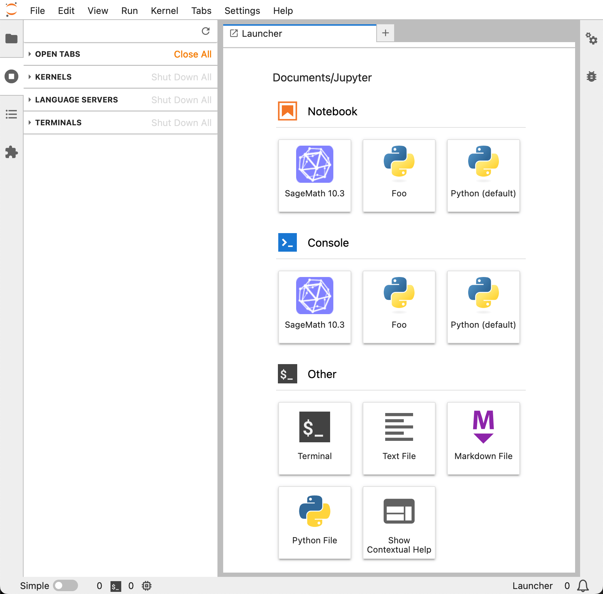
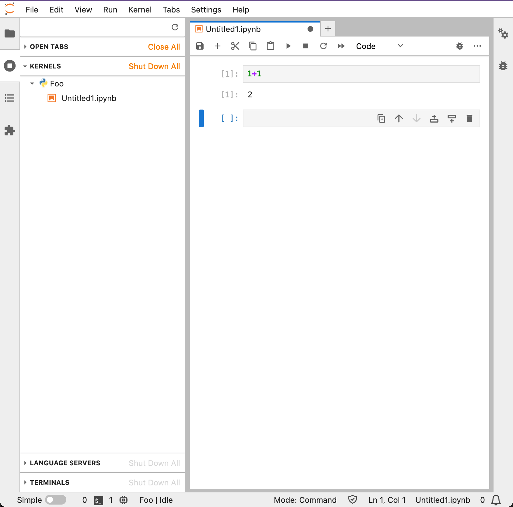

JupyterLab¶
Project URL¶
Project description¶
JupyterLab is a highly extensible, feature-rich notebook authoring application and editing environment, and is a part of Project Jupyter, a large umbrella project centered around the goal of providing tools (and standards) for interactive computing with computational notebooks.
A computational notebook is a shareable document that combines computer code, plain language descriptions, data, rich visualizations like 3D models, charts, graphs and figures, and interactive controls. A notebook, along with an editor like JupyterLab, provides a fast interactive environment for prototyping and explaining code, exploring and visualizing data, and sharing ideas with others.
JupyterLab is a sibling to other notebook authoring applications under the Project Jupyter umbrella, like Jupyter Notebook and Jupyter Desktop. JupyterLab offers a more advanced, feature rich, customizable experience compared to Jupyter Notebook.
Installation instructions¶
First, install
Micromamba.
Please note that Micromamba installation and configuration instructions are outside of the scope
of this document, although this page assumes the MAMBA_ROOT_PREFIX environment variable is
set to ~/.prefix/sw/mamba (see example ~/.zshrc
configuration file). Also, here is an example
~/.mambarc configuration file.
Let's create an isolated environment in which we'll install JupyterLab, and then remove JupyterLab's default kernels.
micromamba create --name jupyterlab -- jupyterlab
find -- "${MAMBA_ROOT_PREFIX}/envs/jupyterlab/share/jupyter/kernels" -mindepth 1 -delete
Create some directories we'll need.
Add this JupyterLab configuration
file to the ~/.jupyter
directory.
Now let's create a launchd service that will make it easy to automatically start and stop
JupyterLab. Add this JupyterLab launchd service
definition to the
~/Library/LaunchAgents directory.
If you would like to learn more about launchd, please see Creating Launch Daemons and Agents.
The launchd service we created will run when loaded, so let's load the service:
Please note that upon future logins, the service will automatically be loaded and hence automatically started.
Now let's confirm that JupyterLab is up and running. Navigate your browser to http://localhost:8888. If you see a JupyterLab page, then so far so good.
Register Python environment with JupyterLab¶
Let's create a Python environment specific to the foo project. In addition to Python, the
environment must contain ipykernel.
Now create a kernel to register the environment with JupyterLab.
micromamba run --name foo \ # (1)!
python -m ipykernel install --user \
--name foo \ # (2)!
--display-name Foo # (3)!
-
The conda environment name is
foo. -
The kernel name is set to
foo. -
The kernel display name is set to
Foo.
Now let's confirm that we can start a notebook using our new kernel. Navigate your browser to
http://localhost:8888. You should see a screen like this with the Foo
kernel available.

Create a new notebook with the Foo kernel and run something simple like 1+1.

Congratulations! 🥳
Maintenance¶
Routine maintenance tasks may be automated with Task and these
taskfiles. Add those taskfiles to the
~/.taskfile directory (create it if necessary), and ensure that the environment variables
TASKFILE_LIBRARY_ROOT_DIR and TASKFILE_INCLUDE_ROOT_DIR are set as in
~/.zshrc.
Here are some common tasks:
To stop the JupyterLab service, run:
To start the JupyterLab service (if not already running), run:
To upgrade the JupyterLab conda environment and remove any default kernel, run:
pushd -- "${TASKFILE_LIBRARY_ROOT_DIR}/jupyterlab"
task launchctl:bootout
task micromamba:upgrade
task micromamba:sync
task remove-default-kernels
task launchctl:bootstrap
popd
To perform the previous operations with a single command, run:
To disable JupyterLab, within ~/Library/LaunchAgents/org.jupyter.jupyterlab.server.plist change
to
then run:
To uninstall JupyterLab, first disable it and then run: